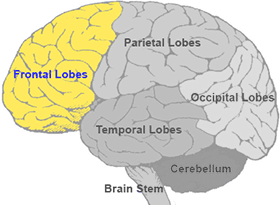
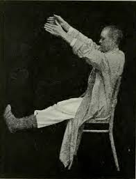

لوب فرونتال نزدیک به یک سوم مغز انسان را در بر گرفته و از طرفی دیرتر از سایر قسمتهای مغز به تکامل میرسد
با توجه به حجم وسیع و سازو کارهای ارتباطی این قسمت از مغز به ویژه سیستم لیمبیک - هیپوکامپ - امیگدال - هسته های
قاعده ای - هیپوتالاموس - تالاموس و لب گیجگاهی گستره بسیاره از رفتارهای پیچیده انسان را در بر میگیرد

ویژگی ها و وظایف :
استدلال و هماهنگیreasoning & coordination
حرکات ارادیvoluntary movements
بازداریinhibition
قضاوت اجتماعیsocial judgement
انگیزهmotivation
آهنگ کلماتtone of words
نکات :
شیار مرکزی مغز را به دو قسمت جلویی یا فرونتال و پشتی یا پاریتال تقسیم میکند
بیشتر قشر حرکتی در جلوی شیار مرکزی قرار دارد
هسته قرمزی واقع در راه های قرمزی نخاعی عمل حفظ کردن و کارهای تکراری را بر عهده دارد و مرکز حافظه حرکتی است
راه های قشری نخاعی برای انجام حرکات جدید و جدی یا مهم تخصص یافته است
انواع حافظه حرکتی شامل اکتسابی مانند یادگیری و ارثی مانند بازتال ها است
انتی سوشیال یا ضد اجتماعی و بی ادب بودن به نوع فعالیت قشر فرونتال در فرد بستگی دارد
آسیب فرونتال در اسکیزوفرنی شایع است
ساقه مغز شامل پایه مغزی - پل مغزی و بصل النخاع میباشد

An example of A-motivationality in catatonic Schizophrenia